佐野SA（下り）
袖ケ浦から那須へ向かう途中の休憩候補。運転疲労が出る前に休憩。
NEXCO東日本の施設ページへ直接リンク。帰路の佐野SA（上り）は1日目の確定日程カードへ統合しています。

🟡 このエリアは候補一覧です。ここから比較・検討して選べます。
袖ケ浦から那須へ向かう途中の休憩候補。運転疲労が出る前に休憩。
NEXCO東日本の施設ページへ直接リンク。帰路の佐野SA（上り）は1日目の確定日程カードへ統合しています。
1日目夜は「スーパーいけがみ」「ダイユー 那須高原店」の両方を検討候補に残します。
※ 距離はローズウッドガーデン＆ヴィラ基準。所要時間は通常時の車移動の目安です。
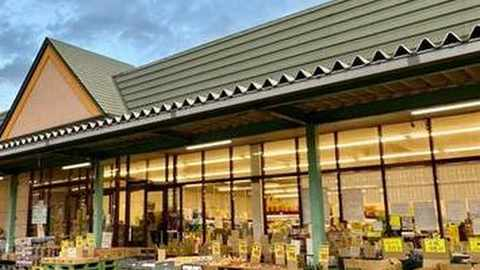
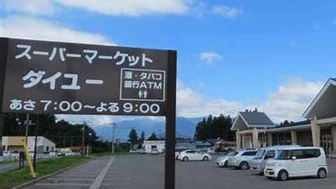
1日目の夕食として確定。ピッツァ・パスタ中心のイタリアン。
夕食確定店として全日程にも反映済み。
森に囲まれたイタリアン。ディナーは予約制の案内あり。
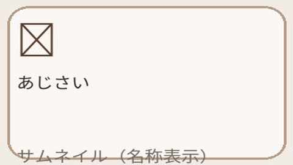
写真未確認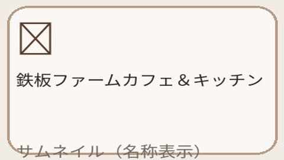
写真未確認元案：黒毛和牛ディナー・洋食。
現行公式情報を確認できていないため要事前確認。
※ 現行店舗を一意に確認できないため、別店舗の写真を誤掲載しないよう写真は保留しています。
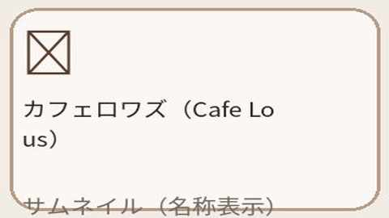
写真未確認元案：和牛グリル・洋食。
現行公式情報を確認できていないため要事前確認。
※ 現行店舗を一意に確認できないため、別店舗の写真を誤掲載しないよう写真は保留しています。
パン・洋食。翌朝用パンの第一候補。
ユーザー画像内のサムネイルを使用。
那須高原のベーカリー。4〜11月は早朝営業の案内。
ユーザー画像内のサムネイルを使用。
ベーグル専門店。翌朝用にも持ち運びやすい候補。
石窯パンで知られるベーカリー候補。
米粉系パンの候補。お土産にも。
森の散策＋買い物＋スイーツをまとめて楽しめるスポット。
ユーザー画像内のサムネイルを使用。
英国風の建物とステンドグラスを楽しめる美術館。
ユーザー画像内のサムネイルを使用。

✅ このエリアは全日程の確定版です。1日目から3日目まで順番に確認できます。
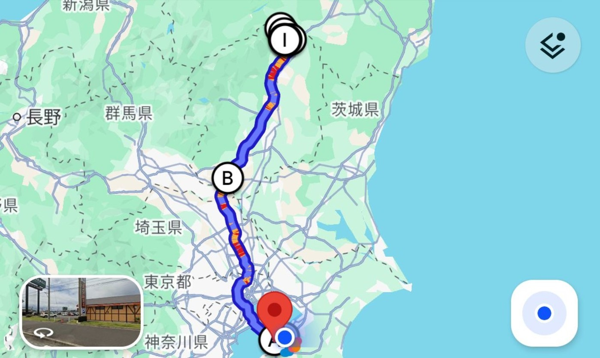
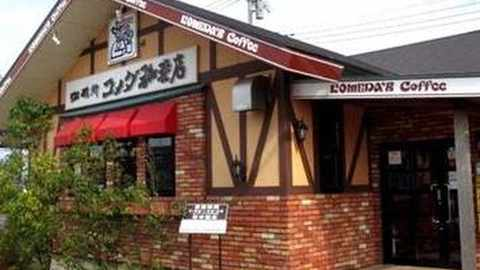
写真：WEB外観写真初日の朝食・出発前休憩に追加。落ち着いて出発準備をしたい時の立ち寄り候補です。
7:00立ち寄り想定。木更津金田エリアで出発前に朝食を取りやすいタイミング。
朝食後、那須方面へ出発。
佐野SA（下り）で休憩。

帰りに休憩する場合の上り線。1日目の佐野SA（下り）カードへ統合しました。
〒327-0813 栃木県佐野市黒袴町字東山1010｜ショッピングコーナー24時間。
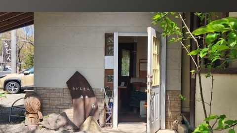
写真：ユーザー提供1日目の昼食。日曜営業のため、火曜定休を避けてこの日に移動。11:00〜15:00目安（麺がなくなり次第終了）。
ユーザー画像内のサムネイルを使用。予約不可の案内あり。
※ 岡本のサムネイルは、今回いただいた写真に更新しました。
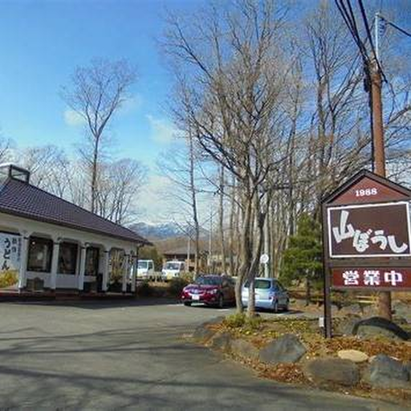
写真：WEB外観写真岡本の次の立ち寄り候補として追加。那須街道沿いの創作うどんレストラン。
昼食候補の比較用として追加。那須街道沿いで寄りやすい立地です。
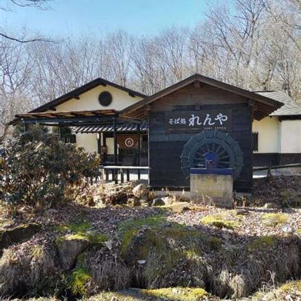
写真：WEB外観写真山ぼうしの次の立ち寄り候補として追加。那須街道沿いの蕎麦店。
昼食・比較候補として追加。にら蕎麦や湯葉蕎麦など那須らしいメニューがある人気店です。
九尾の狐伝説で知られる国指定の史跡。ロープウェイへ向かう前に立ち寄る観光スポット。
所在地：栃木県那須郡那須町大字湯本182。短時間観光向け。
山頂駅からの眺望を楽しむ。荒天時は運休あり。
ユーザー画像内のサムネイルを使用。
1泊目チェックイン。
1日目の夕食として確定。ピッツァ・パスタ中心のイタリアン。
夕食確定店として全日程にも反映済み。
1日目の夕食後の買い出し先として確定。
候補扱いを解除し、1日目の確定日程へ移動しました。
1日目の夕食後の買い出し先として確定。
候補扱いを解除し、1日目の確定日程へ移動しました。
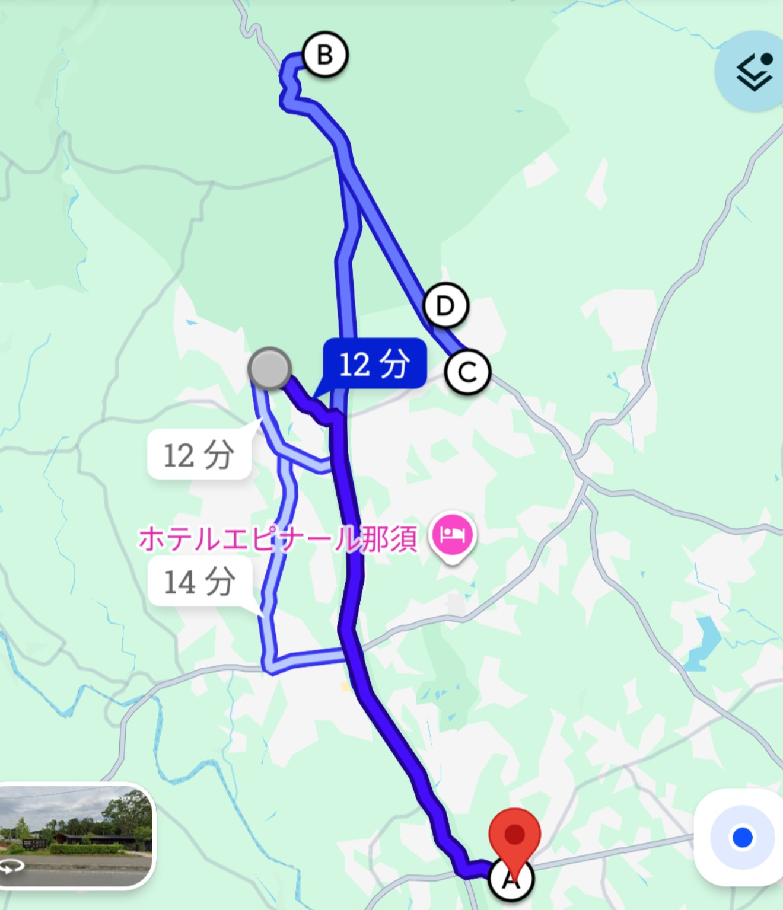
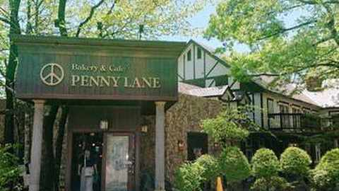
写真：WEB外観写真2日目の朝に移動。朝食・パン購入を兼ねて立ち寄る確定スポット。
ローズウッド出発後、GOOD NEWSへ向かう前に立ち寄ります。
昼食。元プランでは予約済み。
ユーザー画像内のサムネイルを使用。
午後観光。
2泊目チェックイン。
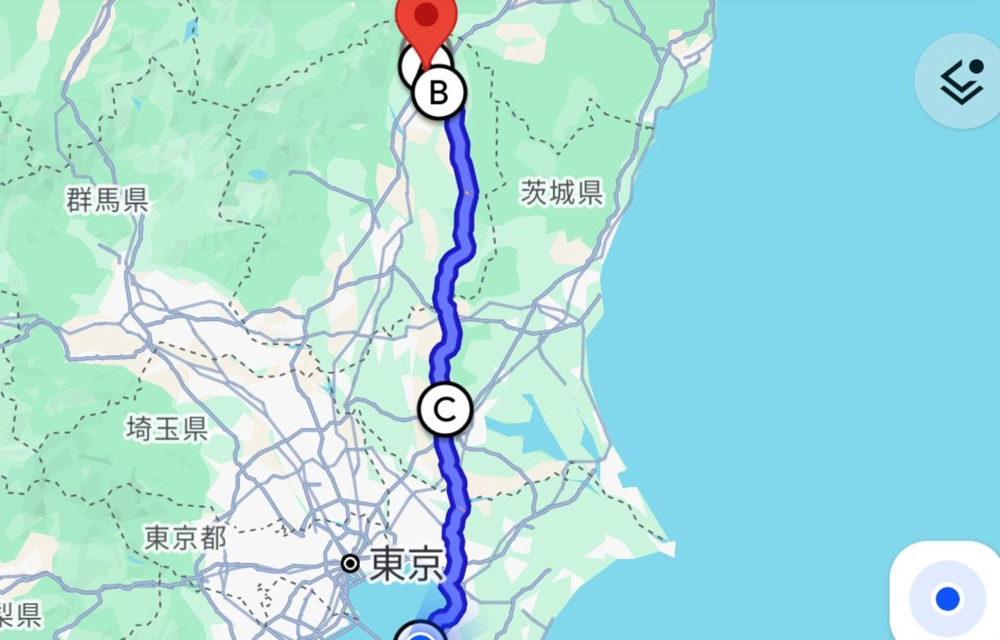
チェックアウト後、お土産ショッピング。
ユーザー画像内のサムネイルを使用。
チーズガーデンの後に追加。御用邸の月などのお菓子・お土産をチェック。
営業時間目安：平日 9:00〜17:30。当日の営業状況は公式で確認。
お菓子の城の次に追加。たまり漬け・漬物・調味料などのお土産をチェック。
営業時間目安：10:00〜17:00。当日の営業状況は公式で確認。
3日目の昼食。火曜営業の時間帯に合わせて11:30に設定。
ユーザー画像内のサムネイルを使用。水曜定休の案内。
レストラン西欧の昼食後に立ち寄れる4候補。那須千本松牧場も検討候補として残しています。
🖼️ 麦ぼうしなど、実写真サムネイルを掲載しています。
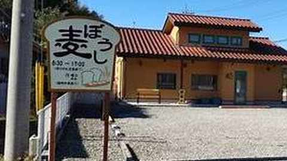
地元の小さなパン屋。食パンや動物パンなど、持ち帰りやすい候補。
売り切れ終了の案内あり。13時台は品数が減っている可能性あり。｜写真：WEB外観写真

御用邸チーズケーキなどの定番を買いやすい。帰路の買い足しにも便利。
10:00に那須本店へ寄る予定なので、買い忘れ補完用として有効。｜写真：WEB外観写真
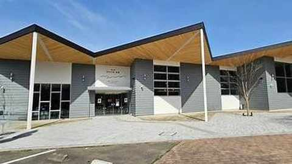
地元農産物・加工品などをまとめて見たい場合の候補。
10/6は第1火曜のため、通常の『第3火曜休』には該当しません。｜写真：WEB外観写真
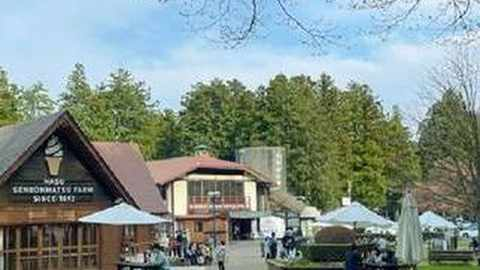
牧場スイーツ・乳製品・定番土産がそろう候補。時間と帰路の動線を見て立ち寄るか判断。
検討候補として保持。立ち寄る場合は当日の時間・渋滞状況を確認。｜写真：WEB外観写真
帰路の夕食。爆弾ハンバーグで知られるフライングガーデンへ立ち寄り。
〒305-0814 茨城県つくば市西平塚332-1｜営業時間 11:00〜22:00（LO 21:30）｜駐車場あり
フライングガーデンで夕食後、長浦駅前へ。到着時刻は当日の交通状況で再計算。
今回は日程・最終買い出し候補から外したスポットです。比較用として更新履歴の直前に残しています。

味噌・醤油・漬物など、地元色が強いお土産向け。
駐車場なしの案内あり。短時間なら動線を確認してから立ち寄り推奨。｜写真：WEB外観写真
那須塩原駅の土産店。和洋菓子などをまとめて選びやすい。
品ぞろえ重視の最終買い出し向け。駅周辺の駐車位置は当日確認。｜写真：WEB外観写真